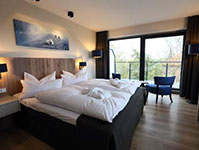
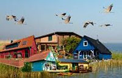

Herzlich Willkommen im 4-Sterne-Schlosshotel Valora an der Ostsee!
Erleben Sie unvergessliche Urlaubstage in einem wunderschönen Schloss an der Ostsee. Das komplett restaurierte 4-Sterne-Schlosshotel mit seinem weitl‰ufigen Schlosspark befindet sich in traumhafter Lage direkt am Groflen Jasmunder Bodden. Es erwartet Sie ein stilvolles Ambiente, moderner Komfort und hervorragender Service.

Hotelzimmer
Das Hotel umfaflt 39 komfortable Zimmer und Suiten, alle mit Balkon oder Terrasse und eindrucksvollem Blick auf den Strand mit seiner reizvollen Umgebung. Komfortausstattung wie Bad/Dusche/WC, Fön, Satelliten-TV, Radio, Direktwahltelefon und Minibar sind selbstverständlich.

Freizeitmöglichkeiten
Das Hotel in befindet sich traumhaft gelegen inmitten der Heide- und Boddenlandschaft der Halbinsel Klosterhof, direkt an der Having - einer Verbindung zwischen Mitwalder Bodden und Stettiner See. Erkunden Sie die landschaftlich reizvolle Umgebung zu Fuß oder mit dem Fahrrad - Räder bekommen Sie direkt im Hotel. Buchen Sie in unmittelbarer Nähe Schiffrundfahrten oder nutzen Sie die Ruderboot-Fähre nach Plauen für Personen und Fahrräder, welche sich ebenfalls in der Nähe befindet. Am Hotel hält in der Saison zudem die Bäderbahn des Ortes und fährt Sie kostenfrei zum Ortszentrum von Hooge und zum Ostseestrand.